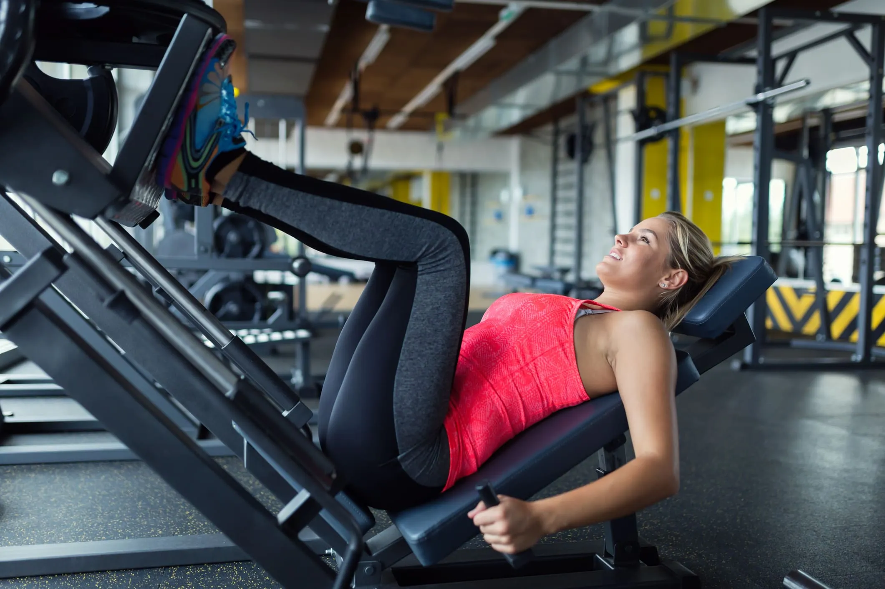

Introdução
Estamos constantemente em busca de evolução pessoal,
seja pela saúde, estética ou bem-estar. Nesse caminho,
o exercício físico é uma ferramenta essencial e deveria fazer parte da rotina de todas as pessoas.
Não se trata apenas de musculação, mas sim de praticar algum tipo de atividade física, seja ela qual for.
Nosso corpo precisa de estímulos regulares para funcionar de forma saudável e eficiente.
A prática de exercícios melhora não só a aparência, mas também o humor, o sono, a disposição e a qualidade de vida como um todo.
Adotar esse hábito é um investimento na nossa própria longevidade.
Por isso, é fundamental encaixar a atividade física no dia a dia, mesmo que de forma simples.
Uma caminhada, um treino funcional ou qualquer outro exercício já fazem diferença.
O importante é manter o corpo em movimento.
A importância dos exercícios
A musculação é vista como um dos melhores tipos de exercício que existem, porque trabalha vários músculos ao mesmo tempo.
Ela pode focar em estética, força ou resistência, tudo depende do seu objetivo.
Mas pra funcionar de verdade, tem que ser feita do jeito certo.
Pra quem tá começando, o ideal é passar por um período de adaptação, que geralmente dura uns 3 meses.
Nessa fase, o treino costuma ser dividido em ABC, ou seja: um dia empurra, outro dia puxa, e outro foca em pernas.
Esse tipo de treino ajuda o corpo a se acostumar com os novos estímulos.
Começar devagar é o melhor caminho. Com o tempo, dá pra aumentar a intensidade e os pesos.
E mesmo sendo algo simples no começo, cada treino já traz resultado.
O importante é manter a constância e ter paciência. Com dedicação, os resultados aparecem.

Execução
Na hora de treinar, o foco tem que ser no equilíbrio entre a execução certa e o peso usado.
Não adianta querer levantar muito se o movimento tá errado. O ideal é adaptar o treino pra carga progressiva:
vai aumentando o peso aos poucos e diminuindo as repetições.
É sempre bom ter a ajuda de um personal trainer, que pode ser pago à parte ou já incluso na academia.
Mas também dá pra aprender bastante sozinho, observando outros alunos mais experientes e pesquisando.
O movimento em si geralmente é rápido na ida e mais controlado na volta.
Isso ajuda a forçar as fibras musculares do jeito certo,
causando microlesões que depois se recuperam — é esse processo que gera o ganho de massa.
Treinar certo é tão importante quanto treinar forte.
Nutrição parte 1
Não adianta só treinar bem e esquecer do resto. Quem leva a academia a sério acaba adaptando toda a rotina:
dorme melhor, bebe menos e começa a comer de forma mais consciente.
A galera costuma dizer que o resultado vem 30% do treino, 30% do descanso e 40% da alimentação
— sem contar a genética, que pode facilitar ou dificultar tudo.
Falando em genética, ela influencia bastante. Existem três biotipos principais:
Ectomorfo - é o magro, que tem dificuldade pra ganhar massa. Precisa comer bem e focar em força.
Mesomorfo - aquele que ganha músculo com mais facilidade. Treino equilibrado e alimentação ajustada.
Endomorfo - costuma ganhar gordura fácil. Precisa de mais cardio e dieta controlada.
Nutrição parte 2
Se o foco é ganhar massa muscular, a alimentação tem que acompanhar.
A proteína é o principal nutriente pra isso — carnes, ovos, frango e outros alimentos ajudam a construir os músculos.
Já o carboidrato é a fonte de energia, e também tem seu papel, mas deve ser consumido com controle.
Antes do treino, o ideal é comer algo com carboidrato, até um docinho de vez em quando,
tipo doce de leite, que tem rápida absorção e te dá energia.
A proteína entra mais no pós-treino, pra ajudar na recuperação muscular.
E por falar em recuperação, ela também é parte do treino.
É nesse momento que os nutrientes fazem efeito no corpo e o crescimento acontece.
Não é preciso (nem recomendado) treinar todos os dias.
Descansar também é treinar, e é isso que garante evolução.

Treino e foco
Foco é tudo. Se você quer ver resultado, precisa levar o treino a sério.
Pode treinar até seis vezes por semana, mas sempre com um plano bem montado e que se encaixe na sua rotina e objetivos.
Não adianta só ir pra academia por ir — tem que ter propósito, disciplina e paciência.
Os resultados não aparecem do dia pra noite, mas quando aparecem, compensam todo o esforço.
E nunca esqueça: o descanso faz parte do processo. Seus músculos não crescem enquanto você tá treinando,
e sim enquanto você tá descansando. Por isso, respeitar o tempo de recuperação é essencial.
Treine forte, coma bem, durma direito e mantenha o foco. O resto é consequência.